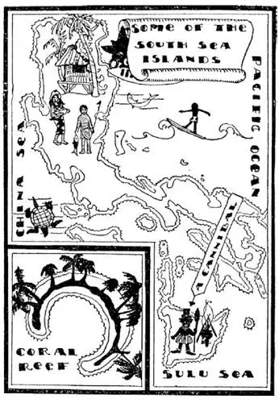

66
Cannibal Islands
食人生番的岛屿

I SUPPOSE you know what cannibals are—savages who kill and eat each other. They used to live on little islands in the Pacific Ocean, which is the biggest, broadest, deepest ocean of all. The Atlantic Ocean has very few islands in it—you could cross the Atlantic without seeing a single island, but in the Southern Pacific Ocean there are thousands of islands, and if you were shipwrecked there you would probably be in sight of one. Many of these islands are so tiny that they are only specks on the map, and some of them are not on the map at all.

If you could drain all the water out of the Pacific Ocean as you drain water out of a bathtub, you would not see a level bottom but thousands of mountains all over the bottom. These mountains were once volcanoes, but they are now drowned by the ocean. Where their tops are high enough to reach above the water you see islands. In the warm water around these islands live the tiny little sea animals called polyps, which I told you made Florida. Their tiny little bones pile up until they reach the top of the water and form rings round these mountain tops. These we call coral islands.
On some of these coral islands live brown-skinned people who once were cannibals; on other islands no one lives. On all these islands grows a tree from which the native gets his food, drink, clothing, house, and furniture. This tree is the cocoanut -palm. I have told you before of that other palm on which dates grow. The cocoanut-palm has a tall trunk with all the leaves at the top, and in the center of the cluster of leaves grows a bunch of cocoanuts.
Cocoanuts are about the size of a baby’s head. There is a shuck around the outside, and when this is taken off, the nut is inside. Strange to say, the cocoanut has what looks like two eyes, a mouth and a sort of coarse brownish hair. Inside the shell of the cocoanut is white meat, and inside of that is a kind of milk. The natives eat the meat of the nut as we would bread, and drink the milk, so the cocoanut is like bread and milk. From the hair on the nut they make rope and string and cloth and everything that we would make with cotton or silk or wool. From the cocoanut shells they make the cups, saucers, and all other dishes they use. From the leaves of the tree they make short skirts, which are all the clothing they wear. From the leaves they also make the roofs to their houses. Their houses often have no sides—they have roofs of leaves held up by poles made of the cocoanut-tree, and a floor which is raised a few feet off the ground.
When the native tribes had fights with other native tribes they would eat those whom they killed. Missionaries went out to teach them to be Christians, and at first the cannibals ate the missionaries, but many of the natives became Christians and almost all have stopped eating people. The missionaries thought the women were not dressed properly, so they made them wear long dresses called “Mother Hubbards,” because they looked like the dress that Mother Hubbard in the nursery book wore. When the native women go to town they wear these dresses, but when they are in the country or want to climb a tree for food, they wrap the dresses around their necks. When the white people went to these islands they took their diseases with them, and the natives, who had never had such diseases before, caught them and many died. They did not seem able to get well even from measles.
The natives live an easy life. They have no money, but they want none, for they have nothing to buy. They do no work, and if they want anything to eat, all they have to do is to climb a tree and get a cocoanut. This is easy, for the trees usually slant, and I have seen boys start at the ground and run up a tree as you might run up a sliding-board.
An Englishman named Captain Cook was the first person to explore these islands and write about them, so one group of islands is named after him.
White men became interested in these islands because they found that the cocoanut meat could be sold in their countries for good prices, so they put the natives to work gathering cocoanuts. It was not necessary to pay them with money, because money meant nothing to them. They wouldn’t work for a thousand dollars a day, but they would work for a ten-cent string of beads. They were very fond of jewelry, so the white men paid them with glass beads or with victrolas to amuse them. Shredded cocoanut is called copra and is used in various ways. The cocoanut oil is used for making soap and a sort of butter.
Ships and steamers seldom pass many of these islands, and only at a few of the largest do they ever stop. Many stories have been told of men who were shipwrecked on coral reefs where no one lived, and where they lived alone and waited for years before they saw a sail and were picked up.
Many of these islands are so small that they have no names. Some of the groups, however, are named. There are the Solomon Islands, named so because the discoverers expected to find the wealth of Solomon there; there are the Cook Islands, named after Captain Cook; there are the Fiji Islands, and there are the Samoan Islands, some of which belong to the United States.
One of the largest groups, called the Philippines, once belonged to the United States, but now is a free nation. The Philippines, however, are nearer China, and the natives are more nearly like the Chinese. Near the middle of the Pacific are the Hawaiian Islands, which still belong to the United States. In Hawaii are raised most of the pineapples we eat. Honolulu is the capital of Hawaii, and from Honolulu come some of the greatest swimmers. They spend much of their time in the water, and young boys and girls are able not only to swim like fish but to ride the waves standing on a board. The ukulele, which you probably have heard and seen, is a musical instrument with a Hawaiian name. When a visitor comes to Honolulu the Hawaiians throw garlands of flowers called lei over his head, and when the visitor leaves he throws the lei into the water so that he will return some day. There is one word the Hawaiians use very often; it is “Aloha.” It means “Hello, Welcome, Good-by, God bless you.”
Aloha!
【中文阅读】
我想你知道什么是食人生番——他们是野蛮人，互相残杀，把杀死的人吃掉。他们以前居住在太平洋的小岛上，太平洋是所有大洋中最大、最宽和最深的。大西洋上没有什么岛屿——你在穿越大西洋时看不到一座岛屿，但是在太平洋上就有几千座岛屿。假如在那儿遭遇海难，你很可能就会看到一座岛。许多岛屿很小，标在地图上只是一些小点，有些甚至在地图上都没有标出来。
如果能像放掉浴缸里的水一样，放掉太平洋中的海水，那么，你看到的不是一个平坦的底部，而是遍布海底的数千座山。这些山曾经是火山，但是现在 都被海洋淹没了。在山峰高出水面的地方，你看到的就是岛屿。在这些岛屿四周温暖的海水里生活着一种叫做“珊瑚虫”的微小海洋生物。我给你说过，佛罗里达州就是由它们构成的。它们微小的骨骼不断地堆积，直到露出水面，在山峰周围形成环礁，我们称这些岛屿为珊瑚岛。
在其中一些珊瑚岛上居住着棕色皮肤的人，他们以前也是食人生番；在其他珊瑚岛屿上则无人居住。在所有这些岛上生长着一种树，当地土著人吃的、喝的、穿的、住的、家里用的全靠这种树。这就是椰子树。我在前面给你讲过另一种长椰枣的棕榈树。椰子树的树干很高，树叶全都长在顶部，就在那丛树叶的中央长着一串椰子。
椰子和婴儿的脑袋差不多大，有一层外壳，剥了壳，就看到里面的坚果。奇怪的是，椰子看起来好像长着两只眼睛、一张嘴巴和毛糙的带棕色的头发。椰子壳里面就是白色的椰肉，在椰肉里面有一种牛奶样的椰汁。当地人像我们吃面包喝牛奶一样吃椰肉，喝椰汁，所以椰子就像面包和牛奶一样是他们的生活必需品。当地人还用椰子上的毛做成绳子、线和布，凡是我们用棉花或蚕丝或羊毛做出来的东西，他们用这种毛也同样做得出来。他们把椰子壳做成就餐用的杯子、碟子和其他盘子。他们用椰树叶做成短裙，除了这种短裙，他们没有其他服装。他们也用椰树叶来盖屋顶，他们的房子通常没有墙壁——房子只是用椰子树作柱子，撑起椰子叶做的屋顶，再加上地板而已，地板离地面有几英尺高。
土著部落相互作战，会吃掉他们杀死的敌人。一些传教士来到岛上，向他们传播基督教。一开始食人生番把传教士也吃了，但是很多土著人变成了基督徒，同时，几乎所有的人都不再吃人。传教士认为当地女人穿着不得体，就让她们穿一种叫做“哈伯德大妈”的宽大长罩衣，因为这种衣服看起来像童谣书中的哈伯德大妈穿的衣服。土著妇女进城就穿着长罩衣，但是她们在乡下或想爬到树上找东西吃的时候，就将长罩衣围在脖子上。白人来到这些岛上，同时也带来了疾病。岛上以前没有这样的疾病，土著居民感染上后，很多人就病死了。就连得了麻疹，他们似乎也不能痊愈。
土著居民过着一种悠闲的生活。他们没有钱，但是也不想要钱，因为岛上没有什么可买的。他们什么活也不干。如果想吃什么，他们只需爬上树，摘一个椰子。上树摘椰子很容易，因为很多树通常都是倾斜的。我见过有些男孩从地面一下子就跑到树上，就像你跑上滑梯一样。
一位名叫库克船长的英国人是第一个探索这些岛屿的人，并记录了关于这 些岛屿的事情，所以有一群岛屿就是以他的名字来命名的。
白人开始对这些岛屿感兴趣了，因为他们发现椰子肉能在自己的国家卖个好价钱。于是，白人让土著居民干活摘椰子。让他们干活也不需要付工钱，因为金钱对他们来说毫无价值。即使一天给他们一千美元，他们也不愿意，但是他们却愿意为得到一串廉价的珠子而干活。土著居民非常喜欢首饰。于是，白人就把一些玻璃珠子偿付给他们，或者给他们留声机让他们娱乐。切碎的椰肉叫做椰仁干，有多种用途。椰子油可以用来做肥皂和一种黄油。
海轮和汽船很少经过这些岛屿，只在最大的岛屿停靠。有很多故事讲述船员遭遇海难后的经历，有的就发生在珊瑚礁附近，珊瑚礁上无人居住，船员只能自己在岛上生活，等待多年后才看见一艘帆船，才被带走。
许多岛屿很小，连名字都没有。但是，有些群岛有名字，如所罗门群岛，它之所以叫这个名字，是因为发现岛屿的人期望在那儿能找到像所罗门国王那么多的财富；再如库克群岛，是以库克船长的名字命名的。还有斐济群岛、萨摩亚群岛，其中一些属于美国。
太平洋最大的群岛之一叫菲律宾，曾经属于美国，但现在是一个独立自主的国家。然而，菲律宾离中国比较近，菲律宾人也很像中国人。靠近太平洋中部有夏威夷群岛，现在仍然属于美国。美国人吃的大多数菠萝都是在夏威夷种植的。火奴鲁鲁是夏威夷的首府。有些最优秀的游泳运动员就来自火奴鲁鲁，他们大多数时间都在水里训练。当地的年轻人，无论男女，不仅能像鱼一样自由自在地游泳，还能站在一块木板上冲浪。你很可能听说过，也见过尤克里里琴，这种乐器的名字来自夏威夷语。游客一到火奴鲁鲁，夏威夷人就把叫“莱伊”的花环戴在游客的头上。游客离开时，就把花环扔进水里，意味着有一天他还会回来。夏威夷人经常使用一个单词“阿洛哈”，表示“你好”，“欢迎”，“再见”，“上帝保佑你”等意思。
阿洛哈!